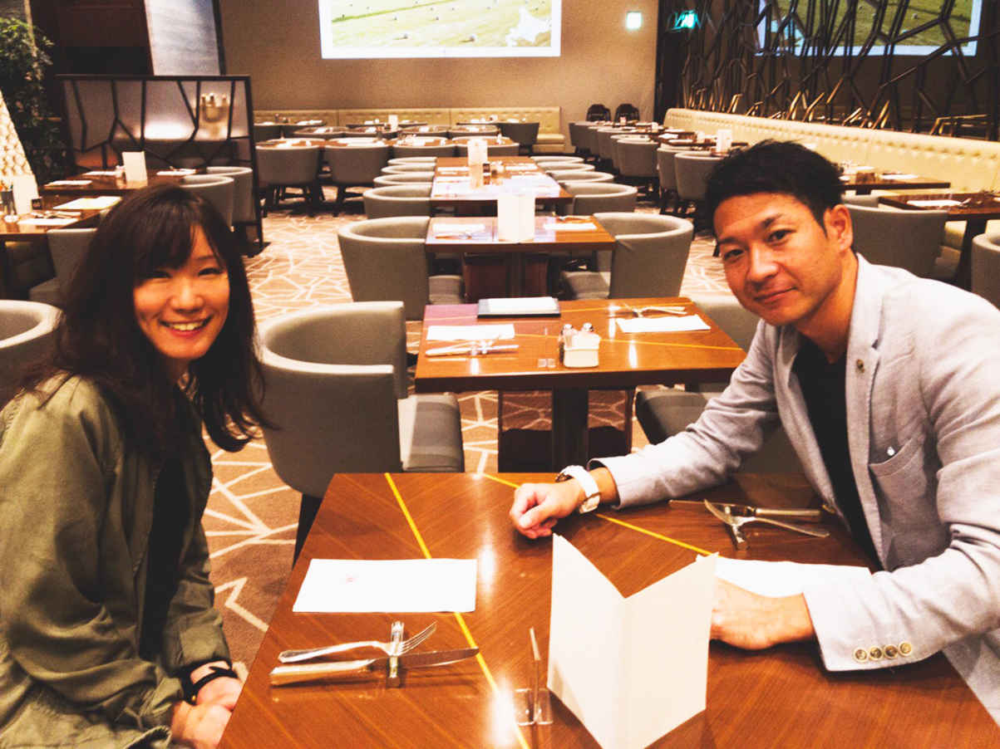
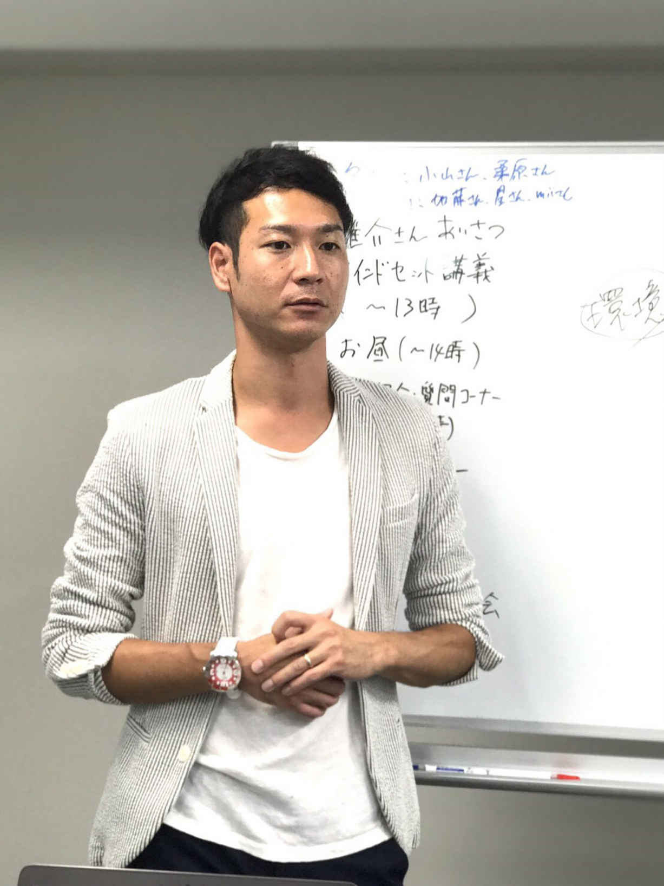

| 一生稼ぐ自分をつくる非常識な法則 | |
| 金剛太志 | |
| Hitotsuku Publication (2017) | |
金剛太志
はじめまして。金剛太志です。この度は、本書を手に取っていただき誠にありがとうございます。
私は現在32
歳で、愛知県の豊橋市というところで嫁さんとネット物販ビジネスをやりながら幸せな生活を送っています。これまで私は、営業職のサラリーマンやアルバム制作のビジネス経営などいろいろな仕事をやってきたのですが、なかなかうまくいかず、紆余曲折ありながら愛知県で現在の仕事をするという生活にたどり着きました。
私は32
年間の人生で、自分自身の生き方についてたくさんの悩みがありました。本書を読んでいただいているあなたにも今、
・毎日満員電車で通勤して、会社に行くだけでもストレスになっている
・キツイ労働環境や人間関係からいつか解放されたい
・一生懸命に仕事をしているのに、お給料が上がらない
・自分をそばで支えてくれている人に恩返しがしたい
・もっと気楽に生活をしていきたい
などといった自分自身の生活について悩みはありませんか？
悩みを解決するためにどうしていこうか？ という方法は、人それぞれにあるものだろうと思いますが、私は、この本を読んでいただければその悩みは解決できる！ と信じています。なぜなら私は、これらのような悩みを、ネットビジネスを始めて全て解決することができたからです。だからむしろ、私の経験を通して、あなたの悩みを解決してみせる！ という気持ちでこの本を書かせていただきました、と正直言いたいところでもあります。
さて、実は私は、野球一筋の学生生活を送っていました。甲子園を目指して両親の反対を押し切り強豪校へ進み、上下関係が厳しい、休みが全くない、という苦しいことだらけだった環境で毎日を過ごしていたのです。「自分はやっていけるのか......」と不安に襲われたり、「もう辞めたい......」と両親に泣きついたりしたこともありましたが、３年間努力をして、強豪校でレギュラーを勝ち取ることができ、県大会で優勝をすることもできました。甲子園に行くという夢は、結局叶えることはできませんでしたが、野球を通して生きていくことの大変さを学ぶことができたのでした。実際、社会に出て会社で働いて、自分でビジネスをやってみて、学生時代に学んだことが役に立ったと感じる部分は、たくさんあったと思います。
学生時代は、もう野球が大好きで、「目標を達成するには強豪校で頑張るしかない」という気持ちで、キツイ環境にも耐えて日々頑張ってやれていた私ですが、「自分自身の悩みを解決したい」という気持ちがあるとき、人はキツイ環境で我慢をすることは正しくないのではないか、という考えを今は持っています。
生活をしていくためにはお金が必要で、そんなお金を稼ぐためにいろんなことに縛られながら仕事をしている、それなのに満足した収入を得られない、そんな人が世の中にはたくさんいると思います。しかし、その〝お金を稼ぐ〟という目的のために、会社に勤めて、毎日朝から晩まで働くことだけが手段ではない！ と私は強くあなたに言いたいのです。どうしてなのかということについては、これから本書を通してあなたにお伝えしていくのですが、ネットビジネスでお金を稼いで生活をしている私だからこそこれは言えます。
本書は、今のあなたの生活を変えるために、「現状を考えて、ネットビジネスのことを知って、稼ぐために必要なマインドを身につけて、実際にビジネスをスタートしよう」という流れで構成がされています。あなたが自信を持って行動していけるように、私の経験や思いを惜しみなくお伝えしていこうと思っています。
本書を読んで、あなたの人生を変えるために少しでもお役に立つことができましたら幸いです。
「はじめに」のところでも少しお話ししましたが、人間は大小あれ身のまわりのことで不安や不満といったストレスを抱えて生活をしているものです。例えば仕事に関することでは、朝から夜まで長時間働いている......、合わない人間がいても上司が言うから嫌々仕事をしている......、会社の都合で右往左往しなければならない......などといったことがあるのではないでしょうか？ またプライベートでも、休日がないから家族や友人と楽しい時間を過ごせない......、やりたいことがいっぱいあるけれど時間と収入の自由が利かないからできない......、仕事のことを考えると憂鬱になってしまう......などと悩んでしまい、気の休められる時間がないという人も多くいるのではないでしょうか？
「そんなストレスを何とかしたい！」と考えてみたとしても、結局現状を変えられず、ストレスと付き合いながらその場しのぎで生きている、逆にそれでストレスが増えてしまった、となって、なかなか解決するところまで行き着かないことのほうがほとんどなのではないか、と私は思います。
しかし、ストレスから解放されて自由な生活を手に入れるためには、今のあなたのいる環境を１８０度変えることがどうしても必要です。「多くの人が抱えているストレスの種とは何か？」を少し考えてみると、実は「お金」と「自由」に尽きます。そしてこのふたつは、サラリーマンという生活をしていては絶対に無理だ、と要はあなたに言いたいのです。
私自身、営業の仕事をしていた頃は、職場の同僚との人間関係はとても良かったので、人間関係でのストレスが私にはあまりありませんでした。しかし、営業のノルマがあったので、土・日の休日でもお客さんと電話をすることもあったり、売上の構成を考えたりと仕事をしなければなりませんでした。要するに、休日が休日ではない状況になってしまっていたのです。
そんな生活をし続けた結果私は、「このままサラリーマンで一生働き続けて自分はどうなるんだろう？」と不安を感じるようになりました。加えて当時私には、「独立して会社を経営したい」という願望もあったので、そういった自分の気持ちに背中を押されて「お金」と「自由」を手に入れようと考えるようになっていったのでした。そして脱サラをして、同時にずっと付き合っていた恋人と結婚をするという幸せも手にすることができました。
脱サラをするのも、結婚をするのも、どんな行動をするにしても必ず〝リスク〟は付きものですが、現状を変えるには何かをやらなければいけない、そう思ったから私は、行動することができました。しかしその行動には、「自分の生活で何がストレスになっているのか？」ということを見つめ直せたことがスタートとしてありました。ストレスの原因に対して、自分が正直に感じた気持ちとしっかり向き合った結果、行動ができたのです。
だから、あなたにもそのスタートとして、「今の自分はどんなことにストレスを感じているのか？」「その原因とは一体何なのだろうか？」ということを、私が考えたようにまずは少し立ち止まって考えていただきたいのです。
自分がどのようなことで悩んでいるのかを少し考えてみて原因がいくつか見えてきたとき、「みんな普通に生活しているし、変わりたいなんて悩んでいるのは自分だけなんじゃないか？」といった周りの人と比較をして考えてしまうことがよくあります。
例えば、周りがみんなサラリーマンで普通に生活しているから、自分もサラリーマンでやっていかないと、と思ったり、周りのみんなは弱音を吐かず仕事をしているから自分も耐えなければ、と思ったりしてしまうことが、あなたもあったりするのではないでしょうか？
「自分だけが周りと違うような状態だったらいけないのでは......」と孤独感を感じると、もちろん不安にもなりますし、かと言ってそんな自分の弱い面を誰かに相談してみることも容易ではないと思います。そうなると「変わること＝悪いこと」のように考えてしまうようにもなりかねません。
ですが、そういった「変わりたい」という気持ちは、過去の私自身もそうでしたが実は多くの人が思っていることでもあるのです。私も学生時代に野球をしていた頃、厳しかった上下関係や他の部員と体格に差があって練習についていけなかったことにすごく悩んでいました。そして「何とか状況を変えられないのか」と誰にも悩みを言えず、ひとりでもがき苦しみました......。
また現在私は、ネットビジネスの講師という立場で塾生をはじめ多くの人と出会い、話をする機会があるのですが、人それぞれに悩みや弱さを聞いて一緒に考えてきました。例えば、「派遣社員で朝から夜まで働いていても安いお給料しかもらえない」「夫の収入だけでは生活ができない」「子供に何かしてあげたいけど今の生活じゃそれが叶わない」などと、環境や状況によってみんないろいろ悩みがあって、そしてみんなが「変わりたい」と思っているのです。でもこんな話を誰にも言えなくて、自分のなかに持っておきながら行動もできずに苦しんでいる、という人が本当にたくさんいます。
だから私は、「こんなことは自分だけなのではないか」という孤独感のなかに自分自身を沈めてしまわないでほしいと、そうあなたにお伝えしたいです。ひとりでいると行動することがとても不安や恐怖に感じてしまいますが、「自分と同じ気持ちの人はたくさんいるんだ！」と思うと、そのような不安や恐怖は解消できるのではないかと、私はそう信じています。あなただけが孤独だということはないのです。
先ほどのところにも少しあったように、どんな行動にも〝リスク〟というものが必ずついてくるものです。本能的に人間は、リスクがあることは避けて、リスクがない方へない方へ動きます。例えばお金に関することでも、人付き合いに関しても、無意識に安全な方の選択を人間はしているのです。あなたも普段の生活を振り返ってみれば、「これはリスクを避けているな」という行動がいくつも思い浮かんでくるのではないでしょうか？
要するに、何か大きな行動するときにほとんど人は、「やる理由」よりも「やらない理由」ばかりを探して、マイナスな方へと思考を傾けてしまうのです。「今の自分にはそんな勇気がないから」「私にはやっていける自信がないんです」「家族や友達から猛反対されたので」などと、やらない理由は簡単に出てきますし、自分で作ることもできます。しかしそれでは、何も変わることなくいつもの生活に戻るだけで、先ほどまでに自分自身で見つめ直してきた苦しさや辛さから解放されることは絶対に不可能です。
では、どうすればいいのか？ 私は、行動した〝先〟を考えることが非常に重要であると考えています。もし今、お金に苦しんでいるのなら、行動して何不自由ないだけのお金を手に入れたとき自分の生活はどうなっているのか、いろいろ縛られて不自由な生活をしているなら、行動して自由を手に入れたらどんな環境が待っているのか、そういったことをあなたには強く意識していってもらいたいのです。あなたが変われば、周りにいる近しい人やあなたの大切な人との関係も大きく変わります。そうなれば、やらない理由を探すことがどれだけ無意味のないことだったのかと感じられるようになります。
そういった自分の信念を持つことができれば、自分が思い描く未来に向かって行動していこう！ というやる気が自分のなかに固まっていきます。マイナスに傾いていた思考がどんどんプラスの思考に向いていくことで、あなたは人生を変える第一歩を踏み出すことができるのです。だから、「やらない理由」よりも「やる理由」を見つけていくようにしてください。
未来のことを考えて、行動していこうと心に決めても、最後にどうしても出てくる不安というものはあります。私も多くの人と話をしてきましたが、特に聞くのが「ちゃんと目に見えた結果が出せるのか」「今はやる気があるけど、時間と共にモチベーションが下がって続かないかもしれない」という不安です。おそらくあなたも不安だったりするのではないでしょうか？
もちろん先のことは誰にも分からないですし、分からないからこそ見えない不安があるものです。実際私も、スタートは不安で不安で本当に仕方がありませんでした......。
しかし、ネットビジネスに関しては、そんな不安は全くいりません。ここまでにもありましたように私は野球一筋の人間で、ネットビジネスのことを全然知らないような人間でした。しかし、ネットビジネスをやり始めた初月で９万円ものお金を稼ぐことができました。その後も10
万円以上を毎月稼ぎ続けて、５ヶ月目には49
万円も稼げるようになったのです。私のような素人でも、短期間でこんな実績を上げられるビジネスは、他には絶対にないと思います。
例えば私自身のサラリーマンの経験からですが、会社であなたがやらなければならない業務というのは、目に見えた結果がすぐに出ないものがほとんどなのではないでしょうか？ そんな仕事を毎日毎日していても、当然すぐにモチベーションは下がるでしょう。しかし、すぐに結果を出せるビジネスであれば、高いモチベーションを保ちながらしっかり行動を継続していくことができます。ここがネットビジネスの強みであると私は感じています。
そしてこれを実現するためにも大切なのが、「〝正しい〟努力をする」ということです。どれだけ強い気持ちを持っていても間違った努力をしていては、悲しいことですが時間と労力とお金の無駄になります......。そうならないためにも、遠回りをせず、正しい努力をして、できるだけ近道で目標を達成していけるようにあなたにはなって欲しいと、そう私は思います。
たとえビジネス未経験の素人であっても、過去にビジネスで失敗をしてしまった人でも、やる気があって正しい努力を続ければ必ず結果は出せるのです。その正しい努力の道を間違わないためにも、ここまでお話ししたことを改めて考えてみて、第２章から先も読み進めていただけたらと思います。
さて、ここまでの第１章は、行動していけるためには、現状を考えて思考をプラスにすることが重要である、ということをお話ししました。次の第２章では、ネットビジネスとは一体何なのかということについてお伝えしていきます。

第１章では、私がネットビジネスと出会ったことや考えをお話しして、あなたにも自分の現状を考えていただきました。しかし次の段階として、「じゃあどうやってお金を稼いでいけばいいのか？」という疑問がでてきているのではないかと思います。この「お金の稼ぎ方」は実は非常に重要で、知っているのと知らないのとであなたの人生は大きく変わっていきます。ですが正直私は、世の中のほとんどの人は、お金の稼ぎ方を全然知らない、と感じています......。ですのでまずは、そのことについてお伝えしていきます。
現在の世の中では、「お金を稼ぐにはやっぱり汗水垂らして働かなければならない」という考えを多くの人が持っています。例えば、職場に通勤して、朝から夜まで自分の頭と身体をフルに使って働いて、帰宅して休息をとって、また次の日も通勤して......という繰り返しで毎日を過ごしている人がほとんどでしょう。それがいわゆる〝常識〟であり、もうそのようなビジネススタイルで、社会が出来上がってしまっている、と言っても良いのかもしれません。
しかし時代の流れと共に、常識は変わっていくものです。私が野球をやっていた頃は、部内での体罰は当たり前、休憩無し水分補給無しでの練習が当たり前というような環境だったのですが、時代と共に常識は変わり、今そのようなことをしたらもう大問題になってしまいます。
ビジネスも同じで、昔の農業から始まって、製造業、小売業、サービス業......と時代で変化してきています。そして現代では、ネットだけで完結できるネットビジネスや、教育などの知識を売るビジネスというものまで存在しています。怪しいものとかではなく、それがちゃんとした働き方、お金の稼ぎ方になっているのです。
お金の稼ぎ方はたくさんある！ ということを知れば、あなたの生き方の選択肢も広がります。しんどい通勤、キツイ業務、合わない人間関係で、忙しい毎日にストレスを抱えて、それしかお金を稼いで生きていく方法がないと耐えて耐えて働く......そんな狭い考え方でしか生きていけないのであれば、幸せになることはもう到底不可能なのです。だから、「お金の稼ぎ方は多様化している」とあなたも考えられるようになっていってください。
お金の稼ぎ方のなかでも、「ネットビジネス」には今、少しずつ注目が集まってきています。
今はインターネットが発達して、世の中にある多くのものが〝情報化〟されているので、そんなネットを使ってお金を稼げる方法に価値が見出されているのです。ネットビジネスは、株やＦＸなどの投資系のビジネスをよく耳にしますが、「アフィリエイト」「ネット物販」「情報販売」という３つが、ネットビジネスの大きな分野であると言われています。初めてこれらの言葉を目にした人には「何それ？？」という感じかもしれませんので、それぞれここでは説明をさせていただきます。
アフィリエイトとは、「紹介」という意味で、人に商品の紹介をして買ってもらうということをします。ブログやホームページなどのネット上で商品を紹介して、自分のページから購入する人が現れたら、商品を売っている企業から紹介報酬がもらえるというビジネスになるのです。アフィリエイトは芸能人もよくやっていますし、リアルでも代理店が商品をお客さんに紹介して買ってもらうという場面はよく見るので、そういったイメージで考えていただければ分かりやすいかと思います。
ネット物販とは、ネット上で「商品を安く仕入れて高く売る」ということをして収入を得ていきます。ネット物販のことは後ほど詳しくお伝えしていきますが、ネットショップなどで安く売られている商品を、利益を乗せて他のショップで売るということをやっていると認識していただければ良いです。
情報販売とは、ＹｏｕＴｕｂｅやＦａｃｅｂｏｏｋなどで自分がやっているビジネスや知識を発信していって、人それぞれに合った情報を売っていくということをします。例えば悩んでいる人がいたら、悩みを聞いて、その人その人にアドバイスをしながら悩みを解決していこうというビジネスになります。情報販売は、ビジネスで実績ができたときにやるとより稼げるというやり方なので、最初はあまり考えなくても大丈夫です。
以上の３つが、ネットビジネスと言われている主なものになります。個人でもできることもあり最近では、ネットビジネスを副業として始めてみる、という人も多くいたりします。だから、それだけ身近で誰もが気軽にやれるビジネスでもあるのです。
さて、先ほどのように、ネットビジネスで稼ぐ方法がいくつもあるわけなのですが、そのなかでも私は、「ネット物販ビジネス」でお金を稼いできました。ネット物販ビジネスは前節でもあったように、「商品を安く仕入れて高く売る」ということをしているのですが、「転売じゃないのそれ？」「高く売るって良いイメージないけどビジネスとして大丈夫なの？」という声をときどき聞くことがあります。ひょっとしたら、あなたにもそう感じてしまわれているかもしれません......。
しかしそんな心配は全く必要ありません。例えば普段よく使うコンビニを考えていただきたいのですが、あなたはパンが欲しいと思ったら、コンビニに売られているパンを買いますよね？ でもそのパンは、コンビニがパン業者から安く仕入れて、お店に並べて、利益を乗せたコンビニの価格で高く売られています。コンビニに限らず、身近にある私たちが利用するお店は全部この仕組みで成り立っています。ネット物販でやっていることはこれと全く同じで、ネットで全部完結させているという違いがあるだけなのです。
そして、私がこのネット物販ビジネスをやろうと思った一番の理由は、能力やスキルに関係なく、誰でもすぐに結果を出せるという〝再現性〟の高さがあったからです。例えば、暑い日にポカリスエットをネットで売ろうとしたとき、私が売っても、あなたが売っても、メジャーリーガーのイチローが売っても、誰が売っても売れますよね？ ネットなので誰が売っているかは分かりませんし、ポカリスエットにはもともとの商品としての価値があるので、暑い日で汗をかいている人が多くいたなら、確実に売れていくのです。
アフィリエイトや情報販売といった他のネットビジネスには、ブログを書ける「ライティンスキル」や、ＹｏｕＴｕｂｅで話せるだけの「スピーキングスキル」が必要なので、人によって結果の差がどうしても生まれてしまいます。だから、「やっても全然稼げない......」という悲しいことになってしまう可能性が大きくあります。ですので、誰がやっても同じように稼げるというネット物販ビジネスこそが一番なのである！ と私はあなたに伝えたいのです。
ネットビジネスを始めていこうと思っても、あなたの身近でやっている人はそういないものなのではないかと思います。何かを始めようと思ったとき人は、「自分ひとりでしっかりやっていけるのか？」「自分みたいな無知の素人には飛び込みにくい世界なのではないか？」と不安になってしまうものです。ましてネットビジネスなら、ネットで完結してしまうので、対人意識がどうしても薄くなってしまいます。正直私も、最初はいろいろと不安になって、怖さを感じてしまっていました......。
しかしネットビジネスでも、人との〝つながり〟が生まれれば、不安や怖さはなくなっていきます。このつながりとは、「ネットビジネスを人から教わる」ということです。私自身、ネットビジネスを始めたときは、ＹｏｕＴｕｂｅやネットのサイトなどに上がっている無料の情報をひとりで調べて独学でやっていました。ビジネスをやっていると分からないことやトラブルがどうしても出てきますが、それも時間をかけて全部自分で何とかしようとやっていました。しかし、２日、３日と長い時間をかけても解決しない問題はどうしてもあり、そんな状態になって私は、ようやく人から教わるということの重要さに気付くことができたのでした。
思い返していけば人は、学校や学習塾などで人から知らない知識や教訓を学んできているものです。だからひとりの力にはどうしても限界があるので、自分だけではどうにもならないことは、人にサポートをしてもらって前進していくことが、成長への一番の近道になるのです。だからビジネスも同じで、分からないことは塾やコミュニティで学ぶということが何より必要なことになります。そうすることでコミュニティの講師の人たちとのつながりもできますし、同じ目標に向かって取り組む仲間ができます。仲間と協力したり切磋琢磨し合ったりして不安や怖さが無くなっていくと、必ず稼げるようになれるのです。
私は、自分自身の経験をもってあなたに、ひとりでビジネスをやらないで欲しいということを、声を大にして言いたいです。どんなビジネスも人がいることで成り立っていますし、孤独感は自分の視野をどんどん狭くしていってしまいます。
しかし多くの人と関わって、稼いでいくためのベースを学んでいくことで、それは今後自分がやりたい夢にも影響を与えていってくれます。例えば「カフェをオープンしたい！」でも「居酒屋を経営したい！」でも、どんな夢でも良いのです。ベースがしっかりあれば、どんなビジネスにもシフトしていけるのです。そのように自分の好きなことができることが叶えば、あなたは本当にストレスフリーで生きていけることになるでしょう。
いかがでしょうか。以上がお金を稼ぐ方法のお話でした。第３章では、この第２章でお話ししたことを実行していくために必要なマインドのことについてお伝えしていきます。

ネットビジネスでお金を稼ぎ続けるためには、物事の考え方、いわゆる〝マインド〟が非常に大切になってきます。第１章のところでもありましたが、物事のひとつひとつをマイナスに考えていたら、どれだけ稼げるノウハウを手に入れても、「全然稼げませんでした......」ということになりかねません。だからプラスのマインドを自分のなかに作っておく必要があります。壁に当たっても諦めずに、ポジティブにひとつひとつ越えていくことができれば、絶対にあなたもビジネスで稼ぎ続けられるようになるのです。だから、ここでは私は、特に必要であると考えている８つのマインドをあなたにお伝えしていこうと思います。
まず１つ目は、「決めたことはやり遂げる」ということです。
稼ぐためにはまず、自分のなかに〝確信〟を持つことが必要になってきます。「こんなこと学んでいて何になるのかな......」「これを知って自分は稼げるようになるのかな......」などという疑念を持っていては、身に付いていくものは何もありません。他の誰かにこれをやってもらおう、なんてことはできないので、自分のことは自分自身が一番に信じていなければいけないのです。
ネットビジネスをしていても、「１週間頑張ったけど、全然結果が出なかったから自分には無理だ......」と言って諦めてしまう人も多くいます。しかし、そのうまくいかない壁を乗り越えていかなければ、将来稼げるようにはなれません。人によっては、それが２週間なのか、１ヶ月なのか、状況は変わってきますが、うまくいかないときはチャレンジした人なら誰にだってあることです。
私も、ネットビジネスを始めたときは、３日間やっても利益０で、何の結果も出せていませんでした......。しかし、４日目、５日目と少しずつ利益を出していけて、１ヶ月トータルで見たときには９万円の利益を生み出すことができました。これは、うまくいかなくても諦めずに、学んだことを信じて、自分のやっていることに〝確信〟を持つことができていたからだ！ と私は今でも強く信じています。ですから、自分が最初に決めたことは何が何でもやり遂げるように、あなたもやっていってください。
２つ目は、「事前準備はしっかりする」ということです。
この事前準備とは要するに、「目標設定」と「ゴールへの見通しの付け方」のことです。ビジネスに限らず、何かにチャレンジして成功するためには、初めに目標設定をしておかなければいけません。うまくいかない人は、この目標設定が明確にないために、困難から逃げて諦めてしまうのです。だから、しっかりした目標設定が自分のなかに形成されていることで、どんな困難にも逃げずに立ち向かっていける、と私は思っています。
私の場合、この最初の目標設定は、「嫁さんを幸せにする！」ということでした。脱サラをして、アルバム製作のビジネス経営がうまくいっていなかったときに、嫁さんは朝から晩まで働いて、文句のひとつも言わず家事までしてくれて、不甲斐ない私の生活をずっと支えてくれていました。だから私は、「何としてでも嫁さんを楽にしたい」「嫁さんの大好きな海外旅行に連れて行けるように稼ぎたい」という明確な思いをすごく持っていました。その結果、嫁さんのためだったらどんなことも諦めない、どんな壁も乗り越えてやると継続して努力することができたのです。
そうして嫁さんのことを幸せにできたとき、ゴールとして自分自身のことも見つめ直せるようになりました。自分の人生は自分のものですし、誰かにどうこうと操縦されるものでもありません。だから、「こんなところに住みたい！」「あんな車に乗りたい！」といった自分の生活の充実を目標にしていけるようになれたのです。そうやって私は、自分の幸せを考えられたことでより周りの人の幸せも考えられるようになりましたし、一度は失敗したリアルビジネスの方にも再びチャレンジしたい、と思えるようになれました。だから、目標設定とゴールへの見通しの付け方は、大変重要になるのです。
あなたもぜひ、自分自身のために、それが最初できなければ近くにいる大切な人のために、明確な目標を設定して、ゴールを考えていけるようになってください。
３つ目は、「やり方は更新していく」ということです。
時間は常に流れているもので、時間と共に世の中も変わっていきます。そうするとビジネスのやり方も変化していくようになります。ですので、あなたが今知っている情報も、常に更新するということを意識として持っておかなければなりません。
しかし、どのようにして新しい情報を手に入れていけばいいのか？ という疑問はあるものだと思います。その疑問の解消として、新しい情報を手に入れるためには、情報に詳しい人から聞くことや新しい情報に触れられる環境に身を置くということが、とても大切になるのです。そのためには、第２章のところにもありましたが、人とのつながりを作るということがやはり必要不可欠になってくるのです。
私自身、アルバム製作ビジネスで独立したときは、誰にもやり方を聞かずに独学で経営をやっていました。何の知識もなく、ニーズやライバル、顧客などのリサーチも何もせず、自分がこれまでに身に付けていた情報だけでやっていたので、今思えば当たり前なのですが、全然うまくいきませんでした......。原因は明らかで、自分ひとりの考えで「自分のやり方」を更新せずにやっていたということです。
ネットビジネスにおいても同じで、すごく稼げていたやり方が半年後には全く使えなくなりました、となることは非常によくあります。ですので、常に新たなやり方を生み出していくことで、ビジネスは発展していくのです。だからあなたも、一度知り得た情報だけに固執しすぎず、世の中の流れを見て、自分で行動して情報を更新していくようにしていってください。
４つ目は、「これまでの経緯や自分の年齢などは気にすることではない」ということです。
ビジネスでもスポーツでも、何かにチャレンジしたときに人は、どうしても〝成功〟か〝失敗〟の二極にみなしてしまうところがあります。結果からでしか物事は判断ができないので、それは仕方のないところなのかもしれません......。
しかし、うまくいかなかったことから小さなことひとつでも学ぶことができたら、それ失敗ではない、と私は考えています。たとえ失敗が２回、３回と続いても、４回目に成功すれば、それは失敗ではなく〝経験〟になるのです。
私もアルバム製作ビジネスでは失敗してしまった......と以前までは思っていましたが、今ネットビジネスでお金を稼いで、自分と嫁さんとの生活を幸せにできているので、「あれは今の生活を得るための経験だったんだ！」と思えるようになりました。
また私は、小学校から大学までずっと野球漬けの生活を送っていた人間で、勉強もクラスではビリの方、就職活動もろくにせずに過ごしていたという状態の学生でした。正直、今の学歴社会では、良い評価と言うには程遠い経歴ですが、今はものすごく勉強をしていて、サラリーマンのお給料よりもお金を稼げています。過去に勉強をしなかったという経験が、「今はたくさん学ばなければ」という自分の糧になって、ビジネスに発展していっているので、これも私のなかでは失敗ではないのです。
要するに私は、「失敗ばかりの過去があるから......」「こういった恥ずかしい経歴だから......」という過ぎ去ってしまったことはもう考えないでほしい！ とあなたに言いたいのです。重要なのは今このときで、今真剣に自分を見つめ直して行動していれば、昔のことで何も思い悩む必要はありません。その行動していくスタートラインに立てたときというものは人それぞれであり、そのときの「自分の年齢」やそれまでの「自分のキャリア」は本当に関係がないことなのです。
５つ目は、「人付き合いで人生は変わっていく」ということです。
自分の近くにいる人は、自分の人生に大きな影響を与えていきます。私が野球の強豪校に入学したときは、自分と同じように野球が大好きで甲子園を目指していた仲間が周りにいたので、私も甲子園を目指して野球に打ち込むことができていました。しかし、なんとなくで野球をやっている部だったり、弱小校で野球をしていたら、「現実見ろよ」などと馬鹿にされて、野球に熱中できるような高校時代を送ることができなかったと思っています。人は無意識に周りの人の顔色を伺って、それに合わせた意識や行動をしていくものです。つまり、周りの人や自分の身の置きどころというものは、大きく自分の人生を左右してしまうのです。
これはビジネスでも同じで、月～金まで働いて、土・日休んでという典型的なサラリーマンの生活をしている人や環境であなたが人付き合いをしていると、サラリーマン体質から抜け出すことは絶対にできません。そんな人が周りにいるなかで「ビジネスやってお金を稼ぎたい！」などと言っても、結局「現実見ろよ」と言われるだけなのです。私のサラリーマン時代も、ビジネスをやろうとする人は周りに誰一人おらず、まさにこんな環境でした。
だから人生を変えていくためには、自分が目指したい道の先にいる人や自分が尊敬できる人と付き合っていくことが、非常に大切になります。
よく「自分の周りにいる５人の平均年収が自分の年収である」なんて言われることがありますが、類は友を呼ぶということわざの通り、まさにそれが現実なのです。お金を稼いでいる人と一緒にいれば、自分も稼げるようになりますし、それはどんどん連鎖していきます。
ですので、ネットビジネスで稼ぎたいなら、ネットビジネスで稼いでいる人たちと人付き合いをしていくとするように、あなたの身近な人間関係を変えてほしいと私は思っています。
６つ目は、「影で努力をすることが他人との差を生む」ということです。
私は勉強が全然できなかった人間でしたが、営業の仕事に就いたとき、必要最低限の計算スキルを求められることとなりました。それは、売上や消費税の計算などといった本当に基本的なことです。しかし、そんな単純な計算も当時の私はやることができませんでした。ですので、当然上司や同僚からは、「お前はそんなこともできないのか」などと言われて馬鹿にされていました。また、サラリーマンの業務だけではなく、脱サラをして独立しようと考えていたときにも、「お前に独立なんて無理だろ」と言われたりしていました......。
でも私には「絶対にできるようになってやる！」「今に見てろよ！」という反骨精神がありました。学生時代に野球をやっていたときも同じように、「そんな強豪校ではお前はやっていけない」などと多くの人から言われていましたが、毎日必死に練習をして努力をしたら、レギュラーを勝ち取ることができました。だから、「最初はできないことでも、努力をすれば絶対にできるようになる！」というマインドが、このとき自分のなかに持つことができていたのです。その気持ちを捨てることなく、平日は一生懸命働いて、土・日はネットスクールに通って、という生活をして努力をし続けた結果、私は営業の仕事をしっかりとこなせるようになり、独立するための知識を身に付けることができたのでした。
つまり、稼げるような人間になって、他人に認めてもらえるようには、少なからず努力をしなければならない、ということです。人の陰口を言ったり批評をしている暇があるなら、人から教わったり本を読んだりして自分のスキルを磨くようにした方が断然良いのです。遊びたいときやのんびりしたいときなど人は自分に甘くなってしまう瞬間がいくつもあるものですが、目標を達成するためには人が見ていないところで努力をしていくことを大切にしていってください。
７つ目は、「お金の使い方を改めて考える」ということです。
これまでの話にもあったように、自分を変えるために何かを学ぼう、行動しようと思ったとき、どうしてもお金は必要です。例えば、本を読もうとするにも本を買うお金を払わないといけませんし、セミナーを受講しようにも受講料を払わなければいけません。このお金をかけるということの意識を、自分のなかで明確にしておく必要があるのです。
自分が成長するために必要なお金、いわゆる〝自己投資〟には、お金をかけていくべきであると私は考えています。普段の生活を振り返ってみて、今まで目標達成とは関係のないところに使っていたお金は、人それぞれにたくさんあるのではないかと思います。飲み代やファッション代、趣味や娯楽に使っている......などあげればいくつも出てくるものです。
ですが正直、そんなところにお金を使っても自分の現状を変えること、自分自身が成長していくことはできません。だから目標達成をしたいのであれば、今までの自分のお金の使い方を見つめ直して、自己投資にお金を使っていかなければならないのです。
お金を使うということは、リスクを背負うということにもなります。人はリスクを背負うと、「何としてでもやらなければ！」という気持ちが高まっていきます。ですので、自己投資にお金をかけてしっかり行動をしていくことが本当に重要になるのです。自分の好きなものや大切な人にお金を使いたい、と思うのであれば、お金を稼いでから存分に使ってください。
８つ目は「自分の気持ちにときには我慢をしよう」ということです。
人間は、生きていると誰もが楽な方へ楽な方へと気持ちが傾いてしまうものです。しかしそんなときに、今自分は何をするべきなのか？ ということを胸に手を当てて考えてください。
友人と遊ぶこと、家族サービスをすることなどは、相手にとっては必要なことかもしれませんが、稼ぎたいという目標に向かって行動している自分には必要のないことになります。「友人を大切にしたい」「家族を守りたい」という気持ちはもちろん大切で、その気持ちを捨てるということをあなたにはして欲しくはありませんが、そんな大切な人たちとの時間を作っていくためにも、どうしてもお金は必要です。ですから、お金を稼げるようになるまでは、友人の誘いは断る、家族サービスは少なくするなどして自分自身の気持ちに我慢をしていくことがとても重要になるのです。
そして前節にもありましたように、お金を稼げるようになって、時間の自由を手に入れたときに、自分の大切な人たちとかけがえのない時間を過ごしてください。
私自身も、ビジネスでお金を稼げるようになるまでは、自分の気持ちに何度も我慢をしてきましたし、嫁さんをはじめ、周りの人たちにも我慢をしてもらったという場面がいくつもありました。しかし、お金を稼げるようになってから、嫁さんと海外旅行に行ったり、友人と１日遊んだりと本当に楽しい時間を過ごすことができています。
あなたも、そういった生活を送っていけるようになれるために、我慢をして自分に厳しくやっていけるようにしてください。
以上の８つが、ビジネスで稼ぎ続けるために必要なマインドです。このマインドをしっかり身に付けて、行動して、あなたも今の生活を大きく変えていってください。第４章では、ここまでの話をもって実際にネット物販ビジネスをやっていくためのノウハウをお伝えしていきます。
これまでの話で、ネットビジネスのことを知って、稼いでいくためのマインドも身に付けて、実際に自分でもネット物販ビジネスをやってみようと思っていただけているのではないかと思います。しかし、ネット上でどのようにやっていけばいいのかというイメージが、最初はなかなか湧かないものです。ですのでここからは、ネット物販ビジネスがどのように行われているのかということをお伝えしていきます。
まずネット物販は、第２章のところでもあったように、ネットで「商品を安く仕入れて高く売る」という転売をしていくことが基本になります。コンビニのパンの例もそうなのですが、自分で作り出したもの以外の世の中に売られてある商品というのは、実は全て転売されている商品に当たります。
ひとつ例を挙げますと、ロレックスの時計が売られているとしたとき、ロレックスの会社が製造して、ロレックスのお店で売っていたらそれは自社販売という形になり転売ではありません。しかし、ドン・キホーテでロレックスの時計が売られていたら、ドン・キホーテがロレックスから安く仕入れて、店頭で高く売っているという形になりますので、これは転売になります。
つまり、あなたがネット物販で仮にロレックスの時計を売ろうとしたときは、このドン・キホーテがやっているように、安く仕入れて高く売るということをネット上でやっていくことになるのです。実際の流れとしては、Ａｍａｚｏｎなどのサイトでロレックスの時計が２万円で売られていたらそれを仕入れて、ヤフオクやフリマアプリで２万５千円でお客さんに売って、お客さんに売れたら商品の発送をしてお金をいただく、というような感じです。
この流れは、ロレックスの時計に限らずどんな商品を扱う場合でも同じです。まずは利益が出る売れ筋の商品を見つける、という〝リサーチ〟の作業から始めます。リサーチをして売りたい商品が見つかったら次は、価格や商品の説明を考えて出品して、お客さんに買ってもらえるようにしていきます。そうしてお客さんに売れたら、購入者に商品を送り、物販ビジネスが成立するのです。
この作業を繰り返して行うことがネット物販ビジネスの基本になります。この流れさえ分かっていれば、作業はパソコン操作で完結ができますし、これまでの話にもあったようにスキルや能力に関係なく誰でもできるので、あなたも容易にスタートしていけるのです。
前節で、ネット上での物販の流れが分かっていただけたと思いますが、このネット物販の流れのなかで利益を出すために最も重要な作業があります。それは「商品のリサーチ」です。
流れの説明のなかで、「お客さんに売れたら」と口では簡単には言っていますが、実際自分の出品した商品が売れる、ということは難しいものです。でもこれはネット物販に限らず、リアルでの物販でも言えることでもあります。実際、「自分の商品が売れなくて、全然利益が出せませんでした......」という人は物販をやっている人のなかに本当に多くいるのです。ちなみに私自身も正直、営業の仕事をしていたとき、この商品を売る難しさを、身をもって感じていました......。
だからネット物販においては、商品を出品する前に「どんな商品を仕入れるか？」というリサーチの作業で、転売をするのに適した商品を見つけていくことが本当に重要になってきます。「そんなリサーチは難しいんじゃないの？」なんて思われるかもしれませんが、実はとても簡単にできることです（笑）。
どうやるのかと言いますと、ずばり「多く売れているもの、買われているものを調べる」ということをするのです。自分が商品の出品をするサイト、例えばヤフオクなら、ヤフオクで何が売れているのか、何が買われているのかをまずは探します。そして当てはまる商品を見つけたら、それと全く同じ商品を自分も仕入れて同じように売るとすれば良いだけなのです。売れているものは、サイトによってランキングが出ていたりしますし、ジャンルによって数多くあるので、見つけるのに高度なテクニックが必要、見つけるのが難しいということは全くありません。
また、そうやって既存の売れている商品を見つけていけて売れるものが分かってくると、自分で新しく商品を見つけて売っていくことも可能になってきます。ですのであなたにも、この「商品のリサーチ」の作業を、最初は疎かにせずきっちりとやっていってもらいたいです。
ネット物販の流れが分かってリサーチをしっかりやっても、「素人が突然売ってもちゃんと売れるものなのか？」と不安になってしまうことはあると思います。
しかし、第２章のところでもあったようにネット物販では、売れている商品は誰が売っても売れてしまうものなのです。ネット物販は、ネット上で商品の取引が完結してしまうので、売る人買う人の顔が見えることも無ければ、声が聞かれることもありません。またネット物販のお客さんは、その商品が欲しいから買うのであって、それがどこの誰が売っているかということを気にして買っているという人はほとんどいません。
ですのでちゃんと売れていて、需要のある商品を出品していれば、出品者がたとえ子供でも、おばあちゃんでも、有名人でも、外国人でも、大きな会社でも、いち個人でも......誰が売っても商品は売れるのです。もちろんどんな人かが、相手にも自分にも分からない分、ネット上でのやり取りをいい加減にせず、丁寧に丁寧に対応することは必要になってきますので、そこは気を付けなければなりませんが。
この誰が売っても売れるということは、要するにリサーチをして商品を見つければ見つけるほど利益は大きくなっていくということでもあります。また見つけた商品によっては、そのときだけではなく何ヶ月も売れ続けるものもあったりします。つまりは、この見つけた商品は、自分の〝資産〟になって、１回売れたら終わりではなく、売り続けることができるのです。だから継続的な利益を出すことができるようになり、ビジネスのモチベーションもどんどん上がっていくようになれるのです。
そんな未来を迎えられるようになるためにも、不安な気持ちになり過ぎず、まずは売れている商品を見つけて、たくさん売っていくようにしていってください。
物販ビジネスをしていると、パソコンと向かい合う時間が長くなるので、人によってはそれを苦に感じてしまう人もいるかもしれません......。
ですが、「物販ビジネスは、楽しいビジネスだ！」と私は思っています。
物販ビジネスは、ネット環境さえあれば時間や場所に縛られずにできるので、自宅で家事や育児をしながらでも、昼間の公園で自然を感じながらでも、午前中のカフェで朝食をとりながらでも、旅行先のホテルでも......本当に自分の好きな時間、好きな場所で作業をすることができます。
また作業は単純なことしかないので、慣れてきたら短時間でこなしていけるようになりますし、リサーチして、「本当に良い！」と自分で思える商品が、お客さんに買ってもらえると、とても大きなやりがいと喜びを味わうこともできます。
私は、ネット物販ビジネスをやり始めて４日目に初めて自分の商品が売れたのですが、そのときの嬉しさには何にも代えられないものがあったことを、今でもすごく覚えています。ちなみに現在では、その楽しさに嫁さんも巻き込んで、リサーチ、出品、発送などの作業を、夫婦で協力して楽しみながら高利益も出してやっていますし（笑）。
もともと野球一筋で、ネットのことを何も知らなかった私でも、効率良く作業ができて、買ってもらえるお客さんのことを考えてすごく楽しいと感じられる、それが物販ビジネスなのです。
そうやってあなたも楽しみながらビジネスができ、短期間で高利益を出すことができれば、仕事でストレスを抱えて苦しい思いをもうすることはありませんし、第１章でもあった「お金」と「自由」を手にすることができます。そうなれば、あなたが生きていくなかで抱える問題は非常に軽くなるであろうと私は信じています。
最後に、ネット物販ビジネスを始めるにあたって、あなたにお伝えしたいことがあります。それは、まずは目標として「身近なゴール」を設定して欲しい、ということです。
「物販ビジネスを始めよう！」と思った最初は、やる気やモチベーションが高く、何でもやろうとなっているものです。そういった気持ちは良いことではあるのですが、「目標は高く持たなければ」「やるからには早く利益を出さないと」などというプレッシャーを自分自身に与えてしまうことにも繋がってしまいます。そうなれば、「自分にはやっぱりできなかったのか......」と気持ちがしぼんで諦めてしまう、という最悪の事態も招きかねません。
ですのでまずは、自分の身近にある数字や結果を目標にして、ビジネスに取り組んでいくようあなたにはやっていって欲しいのです。例えば、いきなり「１００万円稼ぐ！」と考えるのではなく、サラリーマンの収入を超えるくらいの金額をまずは稼ぐ、自分のひと月の生活費分くらいをまずは目指すという意識でビジネスをやっていくのです。そうやって身近な目標金額を稼ぐことができたら、「会社ではあんなに働いていたのに、物販ならこんなに楽に同じだけ稼げるのか！」と労力の違いをより強く認識できるようになれます。お金を稼ぐ労力の違いを知って、最初は副業という位置付けからでもまずは５万円、10
万円と着実に利益を出していければ、あなたの生活は絶対に変わるのです。
「継続は力なり」という言葉があるように、ネット物販ビジネスで結果を出せるようになるためには、継続することが何より最も大切になります。そのためにもスタート、最初のマインドがしっかりしていないと継続してやっていくことは本当に難しくなるのです。そうならないためにあなたはまず、自分のできるところから少しずつ実績を上げていくように行動をして、やっていってみてください。その努力は必ずあなたの力になるのですから。
本書を最後まで読んでいただき、ありがとうございます。現在のネットビジネスのこと、ネットビジネスと出会い変わった私の人生のことが、最後まで読んでいただいたあなたには知っていただけたのではないかと感じています。
私は現在、何にも縛られることなく、嫁さんとふたりで悠々自適な生活を送ることができています。そんな生活を手に入れることができたのは、本書でここまでお話ししてきたようにネットビジネスと出会ったからです。
生活の余裕は自分の心にも余裕を生むことができます。そしてその余裕は、今の生活をしている私に、「もっと多くの人がお金を稼げるようになって欲しい！」と考えさせるようになりました。自分のような人間でも、今までの経験と人を思う心をもって人の役に立ちたいと、そう思うようになったのです。
そしてその思いの第一歩として私は今、ネットビジネスのスクールの講師をやっています。ただビジネスを教えるということではなく、人それぞれに抱いている思いを聞いて、ひとりひとりに合ったサポートができるように日々努めているのです。そしてスクールの生徒全員が幸せになれるように、つまり顧客満足度１００％
にしていけることが、今の私の目指す目標になっています。そして本書を読んでいただいたあなたにも、私は同じように「幸せになって欲しい！」と強く思っています。
あなたのなかに今、「自分の生活を変えたい！」という気持ちが少しでもあるのであれば、もう行動をしていくしかありません。人間はなかなか行動をすることができないものではありますが、行動をしないと何も変えることはできません。
あなたの行動のスタートとしてまずは、私のＬＩＮＥ＠
を登録してみて、そしてよろしければ私と話をしましょう！ あなたのことを知ることができれば、私は持っているもの全部を使って、あなたの人生を変えるために全力でサポートします！ ですので、勇気を出してまずは一歩踏み出してみてください。
最後になりますが、家族、友人をはじめ、私の生活を支えていただいている全てのみなさまに心から御礼申し上げます。
ありがとうございます。
金剛 太志
タップしても登録できない方は、「＠ ｒｌｐ６２５３ｖ」でＩＤ検索して友達追加してください。（初めの＠ をお忘れなく）
タイトル 一生稼ぐ自分をつくる非常識な法則
発行日 ２０１７年11
月29
日
著 者 金剛太志
本書の全部あるいは一部をコピー、スキャン、デジタル化する無断複製は、著作権法上での例外である私的利用を除き禁じられています。本書を代行業者等の第三者に依頼してコピー、スキャンやデジタル化することは、たとえ個人や家庭内での利用であっても一切認められていません。
©2017 Futoshi Kongo